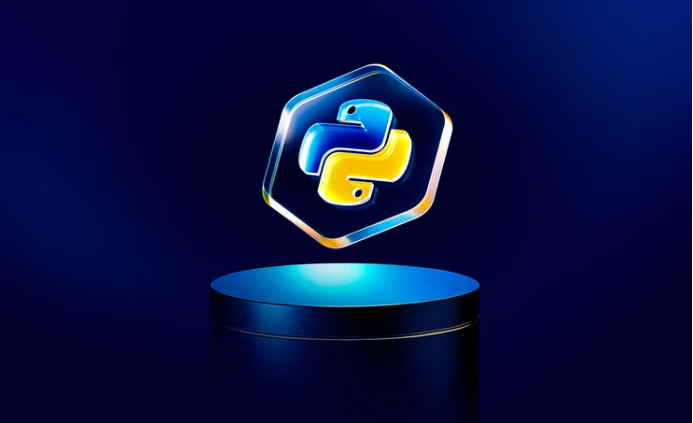

Python Full Course

The 4th semester of a Bachelor of Computer Applications (BCA) program is a significant point in a student's academic journey. By this stage, students have completed their foundational courses and are moving into more specialized subjects related to the field of computer science and information technology. Here's an overview of what 4th-semester BCA students typically experience: The 4th semester is crucial in helping students prepare for their post-graduation plans. Some may start looking for career opportunities in IT and software development, while others may decide to pursue higher studies, such as a Master’s in Computer Applications (MCA) or other related fields.
click the image to Wtach tutorial
click the buttons to get Notes